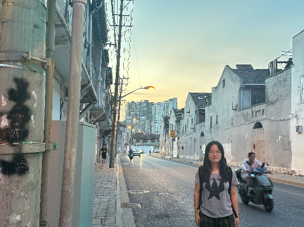
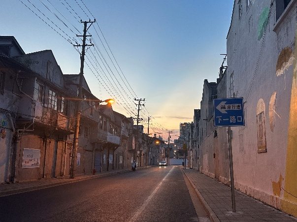
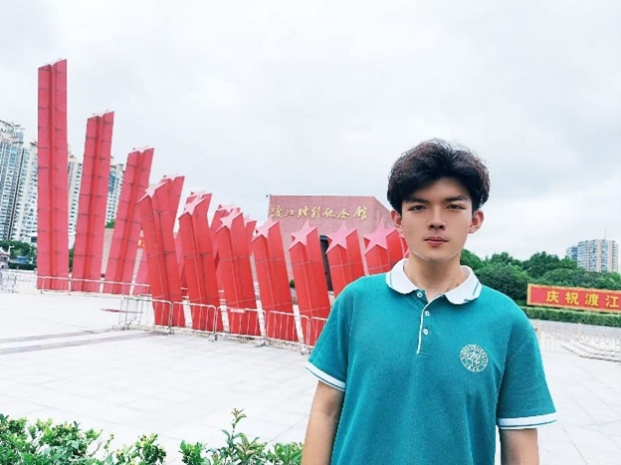

2025年暑假 假期实践 | 红色基因的数字“回响”：多语传播赋能伟大抗战精神
2025年暑期，外文学院2024级本科生第1团支部组织开展了主题为“红色回响·多语讲述：伟大抗战精神的时代传播路径探索——以纪念馆为例”的社会实践活动。团队依托英语与计算机双学科优势，响应党的二十大报告中“坚定文化自信，推动中华优秀传统文化创造性转化、创新性发展”的号召，探索在全球化和数字化时代下，如何通过多语种表达与技术赋能，让红色文化在青年群体与国际社会中焕发新的生命力。

团队成员分赴上海、南京、安徽、重庆、江西、浙江等地，通过实地参访抗战纪念馆和历史遗址、开展口述史采集、进行数字化记录，形成了多样的实践成果。
上海：斑驳弹痕前的青春凝视
在四行仓库抗战纪念馆，张翰文、胡岳霆、汤海妍、陶思谦与朱培瑜五位同学面对斑驳的弹痕和谢晋元将军的家书“为国杀敌，是革命军人素志也”，久久驻足，感受“八百壮士”坚守四昼夜的悲壮历程。

同学们结合专业提出多维度创新思路： 胡岳霆认为，利用数字声光叙事可以让战火的紧迫感更加真实。 汤海妍从语言角度观察到馆内中英日三语展签虽有展示，但整体叙事连贯性不够，她建议设计交互触屏，结合时间轴和国际反法西斯事件，以提升外国观众对历史的理解。 陶思谦提出开发AR互动应用，让参观者“亲历”壮士守仓的关键瞬间。 朱培瑜建议制作多语短视频并利用社交媒体，推动红色故事跨越国界。 此外，蔡佳洁同学参访了淞沪会战旧战场——舟山路、唐山路一带。通过与当地老人的交流，她感受到年轻一代对“街区记忆”的遗忘与流失，提出应通过双语导览和数字档案保存珍贵的口述史片段。
 南京：青春与烈士的对话
倪苏旸同学参访抗日航空烈士纪念馆与渡江胜利纪念馆。在航空烈士馆，4296名平均年龄仅23岁的英烈事迹震撼了他；在渡江纪念馆，他被“百万雄师过大江”的全景投影和“渡江战役的胜利是老百姓用小船划出来的”的壮阔场景深深触动。 作为外语与技术背景的学子，倪苏旸指出：航空馆缺乏详细的英译事迹，渡江馆的支前民工故事几乎没有外语导览。他建议开发多语AR导览、数字档案和角色扮演式VR体验，让青年观众在沉浸中理解历史，并在社交平台发起相关活动，邀请全球用户寻找援华航空烈士的记忆。
安徽、重庆、江西、浙江：多维视角的青年思考
芜湖王稼祥纪念馆：何瑞傲雪发现，纪念馆传播范围有限，她建议通过新媒体和高质量外语翻译，把王稼祥同志身上体现的“信仰的坚定和对人民的忠诚”精神传递给世界，同时在青少年教育中创新互动形式。

重庆抗战遗址博物馆：冉若祎认为，这里的最大价值在于“原真性”，她建议在保持建筑与防空洞原貌的基础上，利用透明投影和数字语音导览补充叙事，并在防空洞口增设市民口述史片段，让“全民族抗战”的视角更加完整。


庐山抗战纪念馆：王婷感受到“地无分南北，人无分老幼”的全民动员，她提出纪念馆应在国际叙事上更进一步，补充系统英文导览，将庐山抗战置于世界反法西斯战争的坐标系中。

浙江省博物馆：奚霁扬被“烽火家书”展区深深打动，她建议增加多语导览、改进服务设施，并利用线上展览与互动讲座扩大传播影响力。


青年之声：让红色记忆跨越时空
这场暑期实践不仅是一次历史寻访，更是一次跨学科的创新探索。团队同学用外语与计算机双学科视角，提出了“多语化+数字化”的传播方案： 多语导览与交互设计： 通过精心设计的多语导览和交互式展示，国际观众能够更好地理解历史脉络和抗战精神，让红色记忆突破语言的障碍。 AR/VR沉浸体验： 借助AR和VR技术，参观者可以“亲历”历史瞬间，感受战争现场的紧迫感与人民英烈的英勇事迹，让历史触手可及。 短视频与社交平台传播： 通过多语短视频和社交媒体，红色故事能够跨越国界，触达全球青年，让中国抗战精神在国际舞台上焕发新的生命力。 红色文化是中华民族的精神宝库。在全球化和数字化的时代背景下，新时代青年有责任、有能力让这些记忆焕发新的生命力。通过此次实践，外文学院2024级本科生第1团支部的同学们真正成为“讲好中国故事”的践行者和创新者，以青春之声，让民族记忆跨越时空与国界，在新征程上激荡出“逐梦强国建设，勇当青春先锋”的澎湃回响。